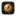
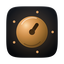
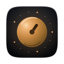
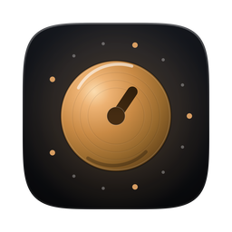
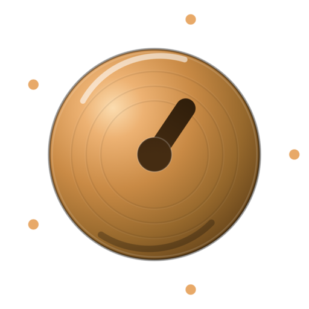
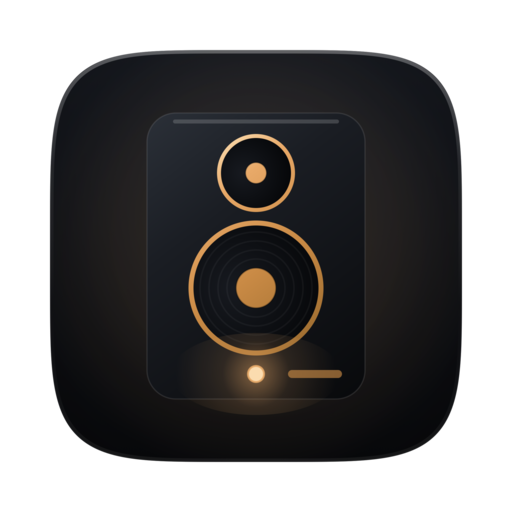
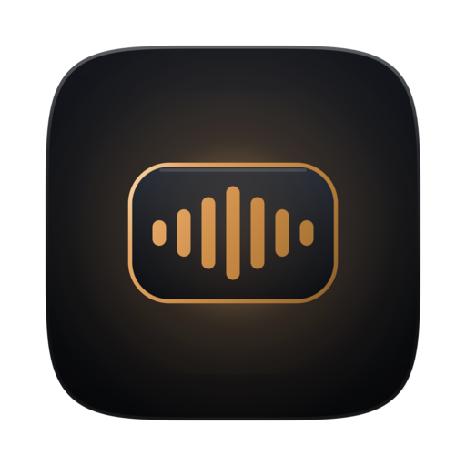
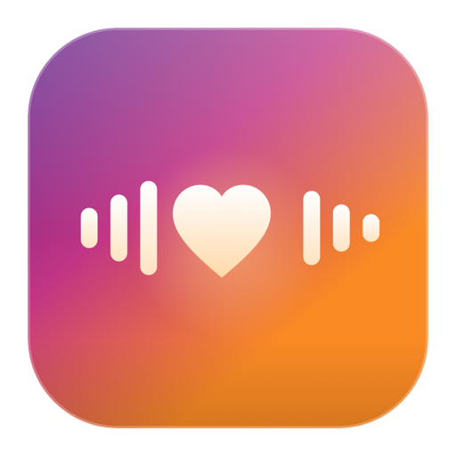

这一版抛弃了均衡器式的声波。产品真正的核心动作不是「播放声音」，而是把情感调到想要的位置——所以图标是一枚可以被你拧动的旋钮。
金色金属旋钮坐在深冷黑的腔体里，四周是 13 个刻度点铺开的 300° 行程，把手停在两点钟方向——情感正在被调高。
它对应的是产品里最真实的交互：音色编辑器中的情感强度、语速、音调。EmotionVoice 让「情感」变成一个可以精确调节的量。
四层叠加，从背景到主体，每一层承担一个语义。
#1A1D24 → #0A0B0E。深夜录音棚的颜色，让金属获得最大对比。
琥珀色光晕从旋钮背后渗出，暗示这台设备是「通电工作」的。
13 个刻度点铺开 300°，从克制到饱满，给「情感量」一个可读的刻度。
偏心径向渐变做出球面感，机加工同心纹、倒角亮边与镜面高光，让它像一块真实的车削金属。
96px 以下自动切换为加粗剪影版：刻度点收敛、旋钮放大、把手加宽，保证 Dock 与菜单栏依然可辨识。

16
64
128
256约 64pt，与相邻图标并排的实际观感（其余方块为占位示意，同样保留 macOS 图标留白）。
与产品 UI 的 Cold Luxury 色板同源：只有一种强调色，只是把它做出了金属的层次。
同一符号的三种形态，覆盖应用图标、品牌标志与单色场景。

MARK · 彩色（透明底）
MARK · 单色同一套配色下的另外两个器物隐喻，作为备选保留。

Reference Monitor 监听音箱。指向「专业录音棚」的定位，器物感最强。
Emotion Chip 情感胶囊。取自产品独有的 EmotionToken，正文中嵌入的情感标记。旧版是粉紫橙渐变加爱心波形，跟产品 UI 的冷调设计语言完全脱节，也是同类 App 里最常见的符号。

旧版 暖色渐变 · 与 UI 色系脱节 · 通用爱心语音符号矢量源加全套位图，可直接替换进 Xcode 工程。
| 项目 | 说明 |
|---|---|
| 画布 | 1024 × 1024，主体 824 × 824 居中，四周留白 100px（符合 Apple macOS 图标规范） |
| 外形 | 超椭圆 squircle，指数 n = 5，等效圆角半径约 182px，与 Apple 连续圆角一致 |
| 小尺寸 | 16 / 32 / 64px 使用剪影版：刻度收敛、旋钮半径 244 → 254、把手宽度 46 → 58 |
| 矢量源 | EmotionVoice-AppIcon.svg · EmotionVoice-Mark.svg · EmotionVoice-Mark-Mono.svg |
| 图标集 | AppIcon.appiconset/，含 10 个尺寸与 Contents.json，覆盖同名目录即可生效 |